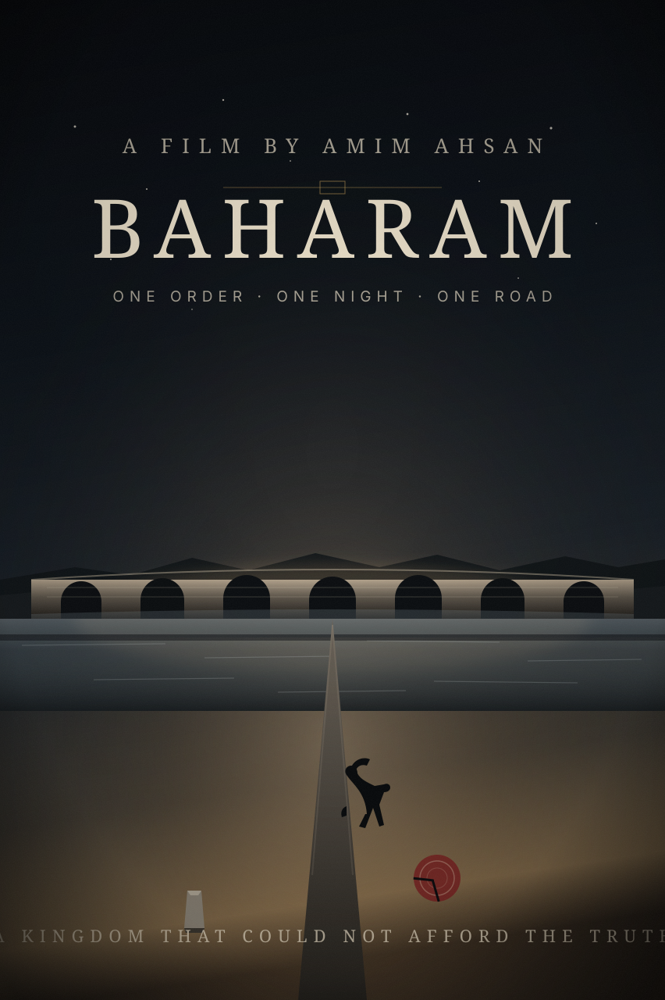

Baharam
the roadmaster
Thirty-eight. Knows every well, every lie, every stone. Three fingers on his left hand.

A film by Amim Ahsan
One order. One night. One road.
The king's roadmaster knows every well between the capital and the frontier — which is why he is given a sealed order to carry at night, and why he is the only man in the kingdom it cannot be carried past.
Feature · Political epic
The kingdom of Kesh is not losing a war. It is losing an argument about who will be left to pay for it. East of the river Amu the horsemen of the Aq have taken the outer provinces one ford at a time, and the court in Sarand has answered each loss with a memorandum.
Baharam is the king's roadmaster: the man who rides ahead of the army and decides where the army sleeps. He knows the Nine Milestones by the shape of their stones, the wells by their taste, and the lower valley because he was born in it — in Tangab, where his sister Durr keeps the granary that feeds nine thousand people.
On the night before the Aq reach the river, King Zav seals an order and gives it to him with one instruction: deliver it at the seventh milestone before dawn, and do not break the seal. The order is a fire order. The bridge of seven arches, the lower granaries, the valley. Not one word of it to be spoken aloud.
A roadmaster is a man who goes first. The film is about the second half of the job: coming back.
Across fourteen chapters the order travels at the speed of a tired mare — through a checkpoint that will not open, a camp that needs the bridge more than it needs the valley, an engineer who has a better idea than fire, and a sister who has counted the grain twice and knows exactly how many days the valley can eat. Baharam is a night film: lanterns, wet stone, wet horses, and men deciding what a signature is worth.
Twelve who are on it
the roadmaster
Thirty-eight. Knows every well, every lie, every stone. Three fingers on his left hand.
the king
Twenty-nine, exact, and frightened of being the king who lost the valley. Signs things and looks away.
his sister
Keeps the ledger of what the palace spends and what it says it spent. Never signs. Always remembers.
granary-keeper of Tangab
Baharam's sister. Has counted the grain twice. Can feed the valley for forty-one days and will say so.
the frontier general
Holds the east bank with eleven hundred men and one bridge. Does not want the bridge burned under him.
the engineer
Built the seven arches forty years ago. Has been waiting for someone to ask her the right question.
keeper of the treasury
Believes a kingdom is a balance sheet with a flag. Counts the war in years, not men.
the boy at the gate
Fourteen. Wants to be a roadmaster because roadmasters are never home when the tax comes.
the seal-keeper
Keeps the wax, the ring, and a list of who has been trusted with both.
the mare
Eleven, grey at the muzzle, bad in the near foreleg. Named for patience. Does not have much.
the groom
Saddles the mare and says the true thing nobody in the palace will say.
beyond the river
Does not appear until the last light. Wants the bridge, because a bridge is a promise.
Three parts · one night on the road
Full screenplay · INT. / EXT.
Part One — The Order
A road, straight as a ruled line, going east into a country that has been dust for eleven months.
A MILESTONE stands at the edge of the paving: a grey stone, waist-high, cut with a numeral. Someone has chiselled the numeral deeper, recently, badly, as if the number had been argued with.
Hooves. Then BAHARAM, thirty-eight, riding a grey mare at the pace of a man who has already lost an argument with the day. Dust in the creases of his coat, dust in his hair, dust in the lines of his face that were not there when he left.
He pulls up beside the stone. He does not dismount. He looks at the numeral, then east down the road, then reaches out and takes a scrap of cloth from the stone's top — a red rag, faded pink, tied there by someone.
BAHARAM
(to himself, without much hope)
Still the first one.
He puts the rag in his pocket, and rides on.
A city gate with a queue at it, and above the gate a board on which somebody has chalked the week's news. The chalk is old. What it says is: THE EAST IS SECURE.
YUSUF, fourteen, sits on a stool with a tally board and a stub of chalk. He is not the gatekeeper. The gatekeeper is asleep in the guardroom, and the queue has learned to go through the boy.
YUSUF
(to a woman with a cart)
Two. And the goat is one.
WOMAN
The goat is not a person.
YUSUF
The goat is not a person, but it eats like one, and I only have the one word for it. Two and a goat.
He chalks it. He is very careful about the chalk. It is the only chalk.
Hooves behind him. He turns, and the whole queue turns, because a horse coming in at that hour means news, and the city has been living on the last news for a month.
Baharam is off the mare before she has stopped. He puts the rein into the boy's hand as if the boy had been standing there for the purpose.
BAHARAM
Water, not too cold, and don't let anyone else ride her.
YUSUF
You're the roadmaster.
BAHARAM
I am the roadmaster.
YUSUF
What's it like, the east?
A pause. Long enough for the boy to understand he has asked the wrong question and will not be told so.
BAHARAM
Flat. Bring her round at noon.
He goes through the gate. The boy holds the mare and looks after him, and the queue waits, and above them the chalk board says the east is secure.
The courtyard of a palace that still employs a fountain, though the basin is dry and the fountain has been fitted, recently and badly, with a wooden lid.
NADER, sixty, saddles a horse. He is not hurrying. Nader does not hurry; it is a professional position.
Baharam comes in, throws his gloves onto a bench, and stands breathing.
NADER
(without looking up)
You're in.
BAHARAM
I'm in.
NADER
The vizier wants the road book.
BAHARAM
The vizier wants the road book every month, and every month the road book is under my bed, and every month he is surprised.
He sits on the bench. He looks at his hands. The left one is missing two fingers at the middle knuckle, and the skin over the rest is thick and pale, like candle wax.
NADER
How far east did you go?
BAHARAM
To the fourth milestone.
NADER
And?
BAHARAM
There were eleven men at the fourth milestone. Two of them were ours. The other nine were waiting for someone to come and be told.
NADER
Told what?
BAHARAM
Whether to run or to be brave. It's the same road either way. That's the trouble with roads.
Nader tightens a girth and says nothing, and the nothing is a question.
BAHARAM
They asked me where the army was. I said the army was coming. They asked me when. I said I was the roadmaster, not the weather.
NADER
You lied to them.
BAHARAM
I told them a thing that is true until it isn't. There's a difference, and it doesn't matter.
A door opens at the end of the courtyard. A CLERK stands in it, holding a lamp in daylight, which is the way a man announces that he has been sent.
CLERK
The roadmaster. The king is awake.
BAHARAM
The king is always awake. It's the only thing he does well.
He gets up. Nader puts a hand flat on the saddle, and says, quietly, to the horse and not to him:
NADER
Sabr.
BAHARAM
(at the door)
What?
NADER
Her name. It means patience. She hasn't got any, and neither have you, and tonight I'd like one of you to.
Baharam climbs. Twenty-two steps, worn in the middle by four hundred years of people who had business upstairs.
From the top he can see east over the roofs: the wall, the river beyond it, and beyond that, small on the plain, four columns of smoke standing straight up in the still air, like the fingers of a hand.
He stops. He counts them. He does not stop counting at four; he keeps counting as if there might be a fifth he has missed, and there is not.
Then he goes in.
Part One — The Order
A map under glass, and on the glass, the reflections of men leaning on their hands.
KING ZAV is twenty-nine and looks it, which in this room is an accusation. VIZIER FARRUKH is fifty and looks like a man who has been asked to be reasonable for a living. Around them, TEN ADVISERS, of whom four will speak and six will be spoken to.
Baharam stands at the end of the table, hat under his arm, dust still on him.
ZAV
Four columns. You are certain.
BAHARAM
I counted them from the palace stair. Smoke doesn't lie about where it comes from.
FARRUKH
Smoke also comes from burning stubble, from charcoal, from a kitchen.
BAHARAM
It was four columns in a line, vizier, each the width of a camp, and they were in a line because someone put them there. Kitchens are not that tidy.
Farrukh smiles the smile of a man who has decided to be generous.
FARRUKH
The roadmaster's eye is famous. I do not doubt the smoke. I doubt the arithmetic behind it. Eleven hundred men hold the east bank. The Aq have never crossed the Amu in force. They raid, they take grain, they go home.
BAHARAM
They took the fourth milestone.
FARRUKH
A milestone is a stone.
BAHARAM
It is a stone with the king's name on it. When they take one they scrape the name off with a knife and leave the number. They are not raiding, vizier. They are editing.
A silence. Zav looks at the map, at the thin blue line of the river, and at the small black mark of the bridge.
ZAV
What does the sardar say?
FARRUKH
The sardar says he can hold the east bank if he is reinforced. He would say that if he were dead. It is what generals say.
ZAV
Then say something else.
Farrukh spreads his hands over the map as though warming them.
FARRUKH
The treasury will not pay for a war in the east and a winter in the capital. One of them must be smaller. The capital is where the king is.
BAHARAM
And the valley is where the bread is.
FARRUKH
The valley is where the bread was. Forty days of it, by the last count.
BAHARAM
Forty-one.
Farrukh looks at him. Baharam does not look back; he looks at the king.
BAHARAM
My sister keeps the granary at Tangab. She counts it twice, the way I count wells. Forty-one days for nine thousand people, and that is before the harvest, which is in the field and not in the granary, and which is the reason the Aq are coming.
ZAV
If they cross, they eat the harvest and sit in front of us until spring. If they do not cross, they go home hungry.
FARRUKH
They go home hungry and come back next year with more men. Hunger is patient, majesty.
ZAV
So is the valley.
Nobody laughs. Zav was not joking.
The advisers have gone. The chairs are pushed in except one, which Zav pushes in himself, slowly, with two fingers.
MIRZA, the seal-keeper, fifty-five, stands with a lacquered box. Inside: wax, a small brazier, and the ring.
ZAV
(not looking at Baharam)
You know the seven arches.
BAHARAM
I know the seven arches.
ZAV
And the granaries of the lower valley. All four.
BAHARAM
Five. The fifth is at Tangab and it is a cellar, so the tax men forget it. My sister does not.
ZAV
Five, then.
He holds out his hand. Mirza gives him the ring without looking at Baharam either. The two of them have practised this.
Zav writes. It takes less time than Baharam expects — a king's hand is quick because a king's hand is never asked twice.
Wax. The ring. The press of it, and the small sound it makes, which is the sound of a thing becoming someone else's problem.
ZAV
You will ride tonight, not in the morning. You will go by the east road as far as the seventh milestone, and there you will hand this to the officer commanding the bridge. He will open it. You will not.
BAHARAM
And if there is no officer commanding the bridge?
ZAV
Then you will open it yourself, and you will do what it says, and you will not write to me about it afterwards.
Baharam takes the tube. It is lighter than it looks. Everything that kills a great many people is lighter than it looks.
BAHARAM
Majesty. What does it say?
ZAV
It says what the kingdom can afford.
BAHARAM
That is not an answer. That is a sentence with a door in it.
ZAV
(finally turning)
I know. I wrote it.
He looks at Baharam with something that is almost appeal, and then he closes it off, the way a man closes a shutter against weather.
ZAV
Take the mare. Not a courier's horse. Couriers are stopped. Roadmasters are waved through.
BAHARAM
Roadmasters are waved through because roadmasters are not carrying anything.
ZAV
Then do not carry it in your hand.
He goes. Mirza begins to pack the wax away. Baharam stands with the tube, and the room's window shows him the four columns of smoke, now five, and much closer than the stair had made them look.
A narrow corridor, whitewashed, with a bench in it that no one ever sits on.
PRINCESS SHIRIN, thirty-one, is sitting on the bench. She has a ledger on her knee and a pen in her hand and she has been there, by the look of the pen, for some time.
Baharam stops. He does not bow; she has told him not to, twice, in writing.
SHIRIN
Was it the valley?
BAHARAM
I am not permitted to say.
SHIRIN
You are not permitted to say because you do not know. My brother seals things the way other men lock doors: so that they can honestly claim they never looked inside.
She writes a figure. She is not writing the figure he said; she is writing a different one.
BAHARAM
What is the ledger today?
SHIRIN
Today the ledger says the palace spends forty thousand on candles. Last year it said nine. I have written both, in the same hand, and nobody has asked me why.
BAHARAM
Why?
SHIRIN
Because the difference is the road to the seventh milestone, paid for twice over in wax. He is not a fool, your king. He is a man doing arithmetic with other people's children, and he knows the sum, and he cannot bear to be the one who says it out loud.
She closes the ledger. She looks at the tube under his arm, and then at his face, and her voice does the thing it does when it stops being a princess's voice.
SHIRIN
Baharam. Whose granary is at the fifth?
BAHARAM
Yours, princess. They are all yours. That is what a kingdom is.
SHIRIN
That is a fine answer and it is not the one I asked for.
He does not answer. She nods, once, as if he had.
SHIRIN
Ride carefully. The road has been very well maintained and that is always a bad sign.
Part One — The Order
Green light. Dust in the green light.
Shirin climbs the ladder with the ledger under one arm and files it in a gap exactly the right size. The shelf is full of ledgers, thirty of them, all the same width, all the same binding.
FARRUKH is waiting at the bottom of the ladder. He has been waiting long enough to have arranged his face.
FARRUKH
Princess. The eastern accounts.
SHIRIN
Are filed.
FARRUKH
The eastern accounts for the last quarter are not filed. I have looked.
SHIRIN
Then you have looked at the wrong shelf, which is a strange thing for a man who keeps the treasury to do.
She comes down the ladder. He steps back to give her room, and the step back is a small confession.
FARRUKH
Princess. We are going to lose the valley. I would like the loss to be legible. When the histories are written, I would like them to be able to follow the money and see that no one stole anything.
SHIRIN
The histories will not follow the money, vizier. They will follow the smoke.
FARRUKH
Then let us hope there is not much of it.
She looks at him for a moment. She is deciding something, and she decides it.
SHIRIN
Forty thousand on candles. Nine thousand on grain for the east bank. Eleven hundred men, four thousand pairs of boots, and two hundred horses. That is the quarter. You may read it, and you may copy it, and you may not take it out of this room.
FARRUKH
Why not out of the room?
SHIRIN
Because in this room it is a record. Out of this room it is a rumour, and rumours have a way of arriving before the horsemen.
He bows and goes to the table. She watches him write. Her hand, at her side, is closed.
Farrukh has gone. Shirin takes down a different ledger — a thin one, unlabelled — and opens it at the back, where the binding is.
Tucked into the binding: a list. Names, in her hand. The first is BAHARAM, ROADMASTER. The second is DURR, TANGAB. There are nine others.
She uncaps her pen, and writes a tenth name: ANAHITA, SEVEN ARCHES. Then she looks at it, and adds, small, beside it: IF SHE IS STILL THERE.
SHIRIN
(to the room)
Somebody has to be able to say who was where.
She closes the ledger. She puts it back. She does not file it with the others; she puts it one shelf higher, where a person would have to be looking for it.
Shirin stands at the parapet with a cup of tea she is not drinking.
Below: the gate, the queue, the chalk board. Yusuf is chalking something. A cart has lost a wheel and four men are arguing about it in the way of men who have all day.
Wide on the plain beyond: the road, straight as a ruled line, and on it a small figure on a grey mare, going east.
Shirin watches until the figure is a dot. Then she empties the tea over the parapet, and it falls a long way, and no one below looks up.
SHIRIN
(quietly)
Come back and be difficult about it.
Part One — The Order
Twenty-nine empty stalls, and in the thirtieth, Sabr, who is eating as though the hay were a personal dispute.
Nader brushes her with long, unhurried strokes. Baharam sits on an upturned bucket with the leather tube across his knees.
NADER
You're taking the seal road.
BAHARAM
I'm taking the east road.
NADER
The east road is the seal road from the third milestone. It has a gate on it and the gate has a man on it and the man has a book. I've been a groom in this palace for thirty-one years. I know what a road is for.
Baharam says nothing. Nader brushes.
NADER
The mare is eleven. Her near foreleg goes at about the fourth milestone and comes back at about the fifth, depending on the weather and her opinion of you.
BAHARAM
And her opinion of me?
NADER
She has decided you are a job. That is better than most husbands get.
Baharam opens the saddlebag. Inside, wrapped in a cloth, is a second, older tube, dented at one end.
NADER
(seeing it)
That's the one from the fourth year.
BAHARAM
It's the one from the fourth year.
NADER
You kept it.
BAHARAM
A man should keep one thing that was going to be his death, so that he can tell the next one apart.
He puts the new tube in the cloth beside the old one. The old one is shorter. The new one is newer, and worse, and he knows it.
A small room, a table, a register the size of a door. MIRZA stands at it with a ruler, ruling a line, which he does not need to do.
Baharam in the doorway.
BAHARAM
How many fire orders in the register?
MIRZA
(not looking up)
Two.
BAHARAM
In forty years.
MIRZA
In forty-one. The first was the salt road in the year of my father, and it was not carried out. The second was the east granary in the fourth year.
BAHARAM
That one was carried out.
MIRZA
That one was carried out.
Mirza rules another line. The ruler makes a small dry sound, like a door closing in another street.
BAHARAM
How many people lived there?
MIRZA
The register does not say.
BAHARAM
It says how much grain was in it.
MIRZA
Nine hundred measures. Which the register does record, and which tells you nothing about the people, and which is the whole of the argument I have with this office.
He puts down the ruler. For the first time he looks at Baharam, and his face is not the face of a functionary.
MIRZA
When you bring the tube back sealed, I will enter it in the register as delivered, and I will not ask what was in it. I have done that twice. It is not the same as being innocent, but it is what the office is.
BAHARAM
And if I bring it back open?
MIRZA
Then I will have to write a word I have never written in this book, and I will be very careful about how I spell it.
Baharam nods. At the door he stops.
BAHARAM
Mirza. Did the king ask who was at the east granary? In the fourth year. Did he ask?
Mirza picks up the ruler again.
MIRZA
He was nineteen. He asked whether the order had been received.
Sabr is saddled. Nader holds her head. Baharam checks the girth, the bags, the rein, and then does it again.
NADER
You've checked it.
BAHARAM
I've checked it twice.
NADER
Then get on, before the third time becomes a decision.
Baharam puts a foot in the stirrup and stops.
BAHARAM
Nader. If a king tells you a thing must be done by dawn, and the thing is wrong, what time is it?
NADER
Boy, I have been in this yard thirty-one years. The king tells me nothing, and I have never once been wrong by dawn.
BAHARAM
That isn't an answer.
NADER
No. But it's the one I've got, and it's kept me a servant instead of a corpse.
Baharam mounts. He gathers the rein. Nader steps back, and then, because he cannot help it:
NADER
Walk her at the fourth. Walk her even if you're late. Late is a thing you can explain. Lame is not.
BAHARAM
Everything in this kingdom is late, Nader.
NADER
Then you'll be in company.
He rides out of the yard. The gate is open. Behind him the palace has fifty windows lit and only three people awake in it.
Yusuf is on the stool. He has brought the stool out to the gate specifically. He has also brought a lantern and a piece of bread, and he is pretending to be on duty.
Baharam rides up. He does not stop.
YUSUF
(getting up fast)
Roadmaster. Roadmaster.
BAHARAM
Open the gate.
YUSUF
It's open. It's been open since the war. Nobody closes it, because closing it would mean the war was —
BAHARAM
Then get out of the way.
The boy gets out of the way. The mare goes through. Then, because the boy is fourteen and cannot help himself:
YUSUF
How far are you going?
Baharam pulls up. He looks back. The boy is standing in the middle of the road holding a lantern and a piece of bread, the whole kingdom behind him in one small shape.
BAHARAM
To the seventh milestone.
YUSUF
What's there?
BAHARAM
A bridge.
YUSUF
That's all?
BAHARAM
That's all. Go to bed, Yusuf.
He rides. The boy watches him until the dark takes him, and then he sits down on the stool and eats the bread, slowly, the way a person eats when they have decided something and are waiting for morning to agree.
Part One — The Order
The mare's hooves on stone. The rhythm of a horse at a walk is four beats and a silence, and the silence is where the film lives.
The first milestone comes out of the dark. Baharam passes it. He does not look at it.
Then he stops, twenty paces on, and looks back.
The stone's numeral has been chiselled at, again, deeper, and beside it someone has scratched a shape: a small circle with a line through it. The Aq mark. It is fresh enough that the dust is still pale around it.
BAHARAM
(to the mare)
Somebody came to the first stone and did not go home.
He does not turn back. He goes on. But he takes the old knife out of his coat and puts it in his belt, where it is easier to reach.
A cart, stopped, on the wrong side of the road, one wheel off. Six people around it. A TAX COLLECTOR, forty, in a fur collar, supervising.
Baharam reins in. The tax collector sees the mare, the coat, the roadmaster's badge on the strap, and his whole body changes its mind about the night.
TAX COLLECTOR
Roadmaster. Praise be. My axle is broken and my driver has opinions.
BAHARAM
Your axle is fine. Your load is on the wrong side of it.
TAX COLLECTOR
Yes. Well. We are going west.
Baharam looks at the cart. On it: three chests, a desk, a chair, and a parrot in a cage.
BAHARAM
Where from?
TAX COLLECTOR
The lower valley. The office at Tangab.
BAHARAM
There is no office at Tangab.
TAX COLLECTOR
There was this morning.
A pause. The parrot makes a sound like a gate.
BAHARAM
On whose order?
TAX COLLECTOR
On the order that came by rider at noon. All offices east of the third milestone to close, all records to be brought in, all officers to be in the capital by the new moon.
BAHARAM
That order is two days old. I would have carried it.
TAX COLLECTOR
Then someone else carried it better.
He smiles, and the smile is not cruel; it is the smile of a man who has survived three administrations.
TAX COLLECTOR
Roadmaster. Take some advice from a man with a parrot. When the government moves its desks, the desks know before the men do. Turn around. Whatever you are carrying, it will keep.
BAHARAM
It will not keep.
TAX COLLECTOR
Nothing does. That is the whole of my profession.
Baharam nudges the mare. Then, without turning:
BAHARAM
How many people are still in the valley?
TAX COLLECTOR
In Tangab? Nine thousand, give or take a wedding. They are not leaving. They have been told the army is coming.
He looks at Baharam's face and something in it makes him add, more quietly:
TAX COLLECTOR
It is coming, isn't it?
BAHARAM
Get your cart off the road.
The fifth stone. Beyond it, the road begins to bend toward the river, and the land opens out, and there is nothing between here and the water but fields.
Baharam dismounts. He walks the mare, as instructed. He is limping slightly himself now, in sympathy or in truth.
He takes out the tube. He holds it up against the sky — a pale seal against the stars, and inside it, folded, the sentence that will decide forty-one days.
He puts it back. He takes out the old tube instead, the one from the fourth year, and opens it, and reads the yellow paper by feel rather than by sight.
BAHARAM
(reading, flat)
To the officer commanding the east granary. You will fire the stores and withdraw. You will not engage. You will not delay for the harvest, for the villages, or for the road.
He folds it. He puts it away.
BAHARAM
You will not delay for the villages.
The mare's ears come up. Far off, east, a light. Then another. Then a line of them, moving, low and slow, the way a great many small fires look when they belong to an army that has stopped for the night.
Baharam counts. He gets to eleven and stops counting, because counting is now a way of being afraid.
He mounts, and rides toward the light.
Part Two — The Road
A village at night is a sound before it is a place: a dog, a radio, somebody laughing at a thing that was said an hour ago.
A hanging lamp. A woman drawing water. Two men mending a plough by the light of it, badly.
Baharam rides in. The dog knows him before the people do.
FIRST MAN
(standing)
Baharam.
BAHARAM
Hassan. Is she at the granary?
SECOND MAN
Where else would she be. She has counted it twice.
BAHARAM
Twice?
SECOND MAN
Three times, since noon. She says the number changed.
Baharam dismounts. He hands the rein to Hassan, then takes it back, and leads the mare himself to the trough.
The two men watch him. They have known him since he was a boy with three fingers more than he has now.
HASSAN
Is the army coming?
BAHARAM
I'm the roadmaster, Hassan. I come before the army. That's the whole of my job.
HASSAN
That's not what I asked.
Baharam loosens the girth. He does not answer. The dog puts its chin on his boot.
A cellar under a stone building. Steps down. The air changes: cool, dry, thick with the smell of wheat and old wood.
DURR, forty-one, stands at a table with a lamp, a slate, and a sack open in front of her. She has her hand in the sack, up to the wrist, and she is not moving.
DURR
(without turning)
If you've come to tell me the army is coming, you can go back up the stairs.
BAHARAM
I've come to see the count.
She turns. She looks at him for a moment — the dust, the tube under his arm, the coat — and then she does the thing sisters do, which is to be unimpressed at a moment that would impress anyone else.
DURR
You look like the road.
BAHARAM
I've been on it.
DURR
Yes. Well. Sit, before you fall over and I have to count you too.
He sits on a sack. She pours water from a jug. The lamp does what lamps do to faces.
DURR
Forty-one days. That was this morning. This afternoon it was thirty-nine.
BAHARAM
Where did two days go?
DURR
Into the mouths of the people who came in from the outer farms. Sixty-one of them, with their animals, because a man came down the road and told them to come in. He had a red rag on the first milestone.
Baharam looks at his pocket. The rag is in it.
DURR
I thought it was you. Then I thought, no, he would have come himself.
BAHARAM
I'm here now.
DURR
Yes. With a tube.
She has not raised her voice. She does not have to. She puts both hands flat on the table.
DURR
Baharam. Look at me. What is in the tube?
BAHARAM
The king's order. Sealed. I am not to open it.
DURR
And it is for the bridge.
BAHARAM
It is for the officer at the bridge.
DURR
And what does a man at a bridge do with an order at midnight, in a war, with the harvest in the field behind him?
Neither of them says the word. The lamp does the work of it.
DURR
How long have you known?
BAHARAM
Since the room. Three hours.
DURR
And you came here first.
BAHARAM
I came here first.
She nods slowly. Something in her face closes, like a door in a house where they are used to doors.
DURR
To say goodbye, or to be told not to?
Stacked sheaves, shoulder high, in rows, going off into the dark. A whole summer standing up in the open.
Durr and Baharam walk the rows. She touches the sheaves as she passes them, the way a person touches a doorframe on the way out.
DURR
If they cross, they eat this and sit at our table until spring.
BAHARAM
Yes.
DURR
If they don't cross, we eat it, and we are alive in the spring, and the bridge is still there.
BAHARAM
Yes.
DURR
So there is only one way this goes wrong.
BAHARAM
There are four.
DURR
Tell me.
BAHARAM
They cross at the ford above the bridge and never come near it. They cross at the bridge because it is still there. Or the bridge is burned, and the fire takes the village, because fire does not read orders.
DURR
And the fourth?
He stops walking.
BAHARAM
The fourth is that the bridge is burned, the village is not, and we are still here in the spring with nothing to eat and no way to get anything in.
Durr looks out at the harvest. It is very dark and very large.
DURR
That's the one the king is buying.
The lamp is low. Baharam is asleep sitting up against a sack. Durr is awake, at the table, with the slate.
She writes something. She looks at the tube, which is on the table between them, and she does not touch it.
Then she takes her keys off the cord at her waist, and puts them beside the tube, and sits back.
The keys are the only sound in the room when she puts them down.
Part Two — The Road
A barrier made of two carts and a plank. Beyond it, the camp: fires in rows, the smell of boiled grain and wet horse.
A SERGEANT, fifty, with a book, and a LANCE-CORPORAL with a lamp. The sergeant's boots are wrapped in cloth against the mud.
SERGEANT
Dismount. Road book.
Baharam dismounts. He hands over the road book. The sergeant reads it with a finger, moving his lips, which he does not need to do and does anyway.
SERGEANT
East road. After dark. Alone.
BAHARAM
Alone.
SERGEANT
It says here you're the roadmaster.
BAHARAM
It says that because it's true.
SERGEANT
It's true in the book. The book's the problem. The book hasn't been stamped since the fourth.
He closes it. He does not hand it back.
SERGEANT
I've had four men come through that barrier tonight with stamped books and no orders. Two of them were deserters. One of them was a tax collector with a parrot.
BAHARAM
Then you've had a busy night.
SERGEANT
It's not finished. The sardar wants the roadmaster, if he comes through. He said it like a man who knew you'd come through.
The lance-corporal lifts the plank. The sergeant still holds the book.
SERGEANT
I'll walk you. Not because I don't trust you. Because if you're carrying what I think you're carrying, I'd like to hear the sardar tell you to keep it.
A tent with a table in it, a map on the table, and four stones on the map holding the corners down.
SARDAR VAHID, fifty-four, sits with his boots on a crate and a cup of tea in both hands. He does not get up.
VAHID
Sit down, Baharam. You've been on a horse since noon and you look like it.
BAHARAM
I'd rather stand.
VAHID
Then stand, and let me look at you, because in about an hour I will be asked to describe you to a court that will want you to be a fool.
Baharam stands. Vahid drinks his tea. The pressure lamp hums.
VAHID
Give it to me.
BAHARAM
It's for the officer commanding the bridge.
VAHID
I am the officer commanding the bridge. I am the officer commanding the river, the road, this tent and the eleven hundred men who are currently sleeping in the mud because the palace has not sent a cart of anything since the fourth. Give me the order.
BAHARAM
It's sealed with the king's ring and it says to give it to the officer at the bridge. It doesn't say which one. If you open it, you're the one.
Vahid looks at him for a long moment. Then he laughs — one syllable, no pleasure in it.
VAHID
That's very good. That's the best thing I've heard all month, and I've heard a man explain why we should bury the grain and eat the horses.
He puts the tea down. He leans forward, elbows on knees, and the tiredness comes off him like smoke.
VAHID
I'll tell you what's in it. I've been expecting it for a week. Burn the bridge. Burn the valley. Let the Aq have a river and no road, and let the capital eat this winter off the palace stores.
BAHARAM
You're certain.
VAHID
I'm certain of the arithmetic. Nine thousand people in the valley, eleven hundred men on this bank. The palace can count eleven hundred. It cannot count the rest.
BAHARAM
And your men?
VAHID
Ah. Yes. My men.
He gets up and puts his hand on the map, covering the bridge.
VAHID
Seven hundred of my men are on the east bank. Seven hundred. If the bridge goes, they are on the wrong side of a river with eight thousand horsemen behind them. There is no ford. The only way back is the bridge. So if the king wants it burned, he wants those seven hundred burned with it, and he has not put that in the order because he has never seen a pontoon in his life.
BAHARAM
Then bring them back across first.
VAHID
And then what holds the east bank? The wind?
Silence. The lamp hums. Somewhere out in the dark a horse coughs.
VAHID
I'll let you through. Not because I agree with you. Because I would like the man who breaks the seal to be able to say afterwards that a general begged him not to.
BAHARAM
I'm not going to break it.
VAHID
No. You're going to hand it to a twenty-three-year-old with a bridge and no infantry, and he's going to break it, and you'll be five hundred yards away when he does.
He calls out, without raising his voice much.
VAHID
Farid!
FARID, twenty-three, comes in. Fresh coat. Clean hands. The face of a man who has been awake for two nights and is still winning.
VAHID
Lieutenant. The roadmaster is going to the bridge. Go with him. Keep him alive as far as the sixth arch, and then do what you're told.
FARID
Sir.
VAHID
(to Baharam)
Farid is the officer commanding the bridge. He has eighteen men and no powder. The powder is in the magazine and the magazine is under water, which is a story for another night.
He sits back down and picks up his tea, which has gone cold, and drinks it anyway.
Two horses, walking east, the camp fires falling behind.
Farid rides like a man who has been taught by a book. Baharam rides like a man who has been taught by a road.
FARID
You're the roadmaster.
BAHARAM
So they keep telling me.
FARID
I've read your book. The road survey of the ninth year. The one with the wells.
BAHARAM
It has no wells. It has a list of wells and a list of men who lied about wells. The second list is longer.
FARID
I used it. On the march east. It was the only useful thing I was given.
BAHARAM
Then you were given very little.
FARID
I was given a commission and a coat.
BAHARAM
The coat's cut well. The commission is a piece of paper with the king's ring on it, and mine's in a tube, and neither of them will hold a bridge.
Farid is quiet for a while. Then, carefully, as though testing a floor:
FARID
What's in the tube?
BAHARAM
Ask me at the seventh arch.
Part Two — The Road
The bridge from the west bank, low angle: seven arches, and the river coming through them in seven grey ropes of light.
It is not a beautiful bridge. It is a correct one.
Baharam and Farid come down the approach road. A SENTRY, sixteen, with a spear and no shoes, stands up.
SENTRY
Halt. — Sir. Halt, sir.
FARID
It's me, you idiot.
SENTRY
Yes sir. Sorry sir. There's a woman on the bridge, sir.
FARID
There's a woman on every bridge in this country. They're called wives.
SENTRY
This one's got chalk, sir.
Baharam is already walking his horse forward.
ANAHITA, seventy-one, is on her knees on the roadway with a torch jammed in a crack, chalking a line across the stone.
Around her feet: a plumb line, a wooden gauge, and a small tin of nails.
ANAHITA
(not looking up)
Don't stand there, you'll put your weight on the joint.
Baharam steps back. She finishes the line, sits back on her heels, and looks at him.
ANAHITA
Roadmaster.
BAHARAM
Mistress Anahita.
ANAHITA
Mistress. It's been thirty years since anyone called me that and I still like it. Are you here to burn my bridge?
BAHARAM
I'm here to deliver an order.
ANAHITA
Yes. That's the same thing with better table manners.
She gets up. It takes her a while. She looks at the tube under his arm, then at Farid, then back.
ANAHITA
Twenty-two thousand cartloads of stone. Forty years of my life. My husband died at the fifth pier, which was my fault, and I have never once pretended otherwise. If it is going to be burned, I would like to be the one to say where.
FARID
Madam, this is a military matter —
ANAHITA
It is a masonry matter with soldiers standing on it. Come. I'll show you something, and then you can burn it with an education.
A room inside the bridge, torchlit, full of iron: four great wheels on stands, each with a chain going down into the dark, each chain rusted to the colour of dried blood.
Above the wheels, on the wall, a chalk drawing of the whole valley, with the river through it and the bridge across the river and one line through the bridge.
ANAHITA
The seventh arch is not an arch. It is a gate. I built it that way because the river is not a thing you cross; it is a thing you negotiate with.
BAHARAM
What do the wheels do?
ANAHITA
They lift the sluice boards under the fifth arch. All four of them together. It takes four men and an hour, and then the Amu comes through here at the width of the whole bridge and goes down the ford on the far side like a hand across a table.
FARID
That would flood the east bank.
ANAHITA
It would flood the ford. Eight thousand horsemen cannot cross a ford that is nine feet deep.
BAHARAM
And the fields?
She looks at him for a moment, and there is respect in it, and grief.
ANAHITA
The lower fields are on both banks. The water goes over the ford, and the ford is above the fields, so the fields go under. Your four days of harvest. Your forty-one days of grain. All of it in one night.
FARID
Then it's the same as burning, and it takes four men and an hour instead of one man and a lamp.
ANAHITA
No, lieutenant. It is not the same. Fire takes the bridge and the granaries and the village and everything in it. Water takes the fields and gives the bridge back. In the spring the river goes down and the silt is two fingers deep and the valley eats for ten years.
She puts her chalk to the wall and draws a second line, through the ford, and then a third, through the fields.
ANAHITA
You can burn a thing or you can drown it. Burning is what you do when you have given up on the spring.
BAHARAM
Who has the keys to this room?
ANAHITA
I do. It is my bridge. And the sardar has a set, and the palace has a set, and the palace's set has been in a drawer in Sarand for eleven years.
Baharam looks at the wheels. Then at the tube. Then at Farid, who is trying, very hard, not to look at either.
BAHARAM
Lieutenant. How much of the powder is actually under water?
FARID
All of it.
BAHARAM
Then the king has sent a fire order to a man with no fire.
FARID
We have oil. We have hay. We have a magazine with thirty barrels of lamp oil and a hundred men who can carry them.
BAHARAM
That's not a bridge-burning. That's an argument that lasts until the oil runs out.
ANAHITA
(quietly)
He's right, boy. Stone doesn't burn in one night. You'd have to take the bridge apart and burn that. Which is a month's work and the Aq will help.
Farid turns on her, and then stops, because he has nothing to turn with.
FARID
The order says the bridge. The order doesn't say how.
ANAHITA
The order always says the bridge. It's the only word in the language that means the same thing to everybody.
Part Two — The Road
It starts the way rain starts in that country: somebody says it's coming, and then it is not coming, it is here.
The road becomes a river of clay. Along it, west, a line of people: carts, a donkey, two old men carrying a door with a child on it, a woman with a birdcage, a boy driving three goats.
They are coming from the valley. They are not running. Running is for people with somewhere to run to.
Baharam reins aside to let them pass. Farid does not.
FARID
Where are you going?
WOMAN
West.
FARID
There's nothing west. There's the capital and then there's the desert.
WOMAN
Then there's the capital and then the desert.
She goes on. The boy with the goats stops beside Baharam's stirrup.
BOY
Are you the army?
BAHARAM
No.
BOY
Are you going to be?
Baharam looks at him. Then he takes the bread out of his saddlebag — his own supper, half a loaf, hard — and gives it to him.
BOY
Is that it?
BAHARAM
That's it.
The boy takes it and goes. Farid watches him go with the face of a young man discovering that his commission does not cover bread.
FARID
They're leaving because they know. Somehow they know. Nobody told them.
BAHARAM
Everybody knows. That's what a road is. It's the only newspaper in the country.
Eighteen men under a cart turned on its side, and one man in white and grey standing in the rain without a hat, which the eighteen men find more alarming than a hundred horsemen.
The HERALD holds a staff and a folded paper. He is holding the paper the way a man holds a thing he expects to be refused.
HERALD
I am the voice of Temur of the Aq. I will say it once, in the rain, and then I will go back.
FARID
Say it.
HERALD
Temur does not want your valley. He has a valley. He does not want your city. He has two. He wants the bridge, because a bridge is the only thing in this country that cannot be carried away. Give him the bridge, and he will cross it in the morning, and not one field will be burned in the crossing.
FARID
And the valley?
HERALD
The valley eats. The valley pays the same tax to a different man. Temur is not a fool; a burned valley pays nothing for twenty years.
FARID
And if we refuse?
HERALD
Then he takes the ford above you, which is nine inches deep in a dry year, and burns the bridge from the east side, and it does not matter to him at all, because he has already crossed. He is offering you the bridge so that you will have one afterwards.
He puts the paper on the cart. Nobody takes it.
HERALD
(to Baharam, in passing)
Roadmaster. He said you would be here.
BAHARAM
How did he know?
HERALD
Because if he were the king of Kesh, you are the man he would send.
He walks off into the rain. The eighteen men watch him go. Nobody stops him. Nobody could say why.
Under the arch, out of the rain: Anahita, Farid, Baharam, a lantern, and the tube on a stone between them.
Water is coming through the arch and going past their boots.
FARID
If I give him the bridge, he crosses it and the valley lives, and I have handed the east to an enemy without a shot.
ANAHITA
If you burn it, he crosses at the ford and the valley burns anyway, and you have still handed him the east.
FARID
But I would have obeyed.
The rain fills the pause.
ANAHITA
Yes. There is always that.
FARID
(to Baharam)
Open it.
BAHARAM
No.
FARID
You're the courier. Your job is to carry it. It's here. Carry it the last three feet.
BAHARAM
It's addressed to the officer commanding the bridge. That's you.
FARID
It's addressed to the man who will do it. That's not me and we both know it. — Open it.
Baharam looks at the seal: wax, the ring, the small imperfect edge where the ring was pressed too hard and the wax ran.
He does not touch it.
BAHARAM
There are nine thousand people in Tangab. If I open it, I open it there.
FARID
Why there?
BAHARAM
Because a man should read his orders where they land.
He picks up the tube. He puts it inside his coat, against his chest, where it will get wet and stay warm.
Farid stares at him. Anahita, for the first time, smiles.
ANAHITA
Hah. — Take the lantern, roadmaster. And take the boy. He needs to see a man read something.
Part Two — The Road
Rain, easing. Forty people in the yard, all of them awake, none of them dressed for it.
Baharam stands on the well coping so they can see him. Farid stands behind him with his hands behind his back, which is how a young officer stands when he has decided to be quiet.
BAHARAM
At first light the sluices at the bridge open. The water comes down the ford and over the fields. Nobody sleeps in a house below the road tonight.
A murmur. A man at the back says something about his roof.
BAHARAM
Your roof will still be there. Your roof will be wet. Take the animals up to the ridge road, take the old people, take the children, take what you can carry in two trips and not three.
WOMAN IN THE CROWD
Who says?
BAHARAM
I say.
WOMAN
Who says you?
A pause. It is a good question. It is the question the whole film has been circling.
BAHARAM
A man in a room in Sarand. And I am the one who rode here with it. That is all the authority there is in this country, and it has never once been enough.
Nobody moves. Then Hassan picks up a sack, and the crowd begins, slowly, to be a crowd doing something.
Durr is at the table. The slate. The lamp. The keys.
Baharam comes down the stairs. She does not turn around.
DURR
The seed grain goes up. The eating grain stays.
BAHARAM
All of it goes up.
DURR
The eating grain is nine hundred measures and it is in a cellar. You cannot carry nine hundred measures up a ridge road in two hours with forty people and a donkey.
BAHARAM
Then carry the seed and open the cellar doors and let the water have the rest.
She turns around.
DURR
Say that again.
BAHARAM
Water in the grain is a loss. Fire in the grain is a loss and a village. Pick the loss.
DURR
I have spent eleven years keeping this cellar dry. Eleven years. I have argued with the tax office, the quartermaster, two floods and one archbishop. And you want me to open the doors.
BAHARAM
Yes.
DURR
On whose order?
Baharam takes the tube out of his coat and puts it on the table. The wet wax is dull. The seal is intact.
DURR
You still haven't opened it.
BAHARAM
No.
DURR
Why not?
BAHARAM
Because while it's sealed I can say I don't know. And I have been saying that for eleven years, and it has been very comfortable, and people have died in it.
She looks at him for a long moment. Then she picks up the keys and puts them in his hand, and closes his fingers around them, three fingers and two.
DURR
Then open it. In front of them. Not in the room with the lamp and the polite men. Out there, where the count is.
The yard, full. Forty people and their animals and their bundles, and the sheaves behind them going off into the dark.
Baharam stands on the coping with the tube in one hand and the granary keys in the other.
Farid, at the edge, has gone very still.
DURR
(from the crowd, loud, so everyone hears)
Read it, Baharam.
He breaks the seal.
The wax does not crack dramatically. It comes away in two pieces, one of which falls in the mud.
Part Three — The Seal
Baharam unfolds the paper. It is a single sheet. It is folded in three. The paper is good paper, and this is somehow the worst thing about it.
He reads it to himself first. It takes four seconds.
His face does not change. That is the acting.
DURR
Read it aloud.
He looks up at forty faces.
BAHARAM
(reading, level)
From the king, to the officer commanding the bridge at the seventh milestone. You will, before the enemy crosses, fire the granary at Tangab, the granaries at Anwar and Deh, and the bridge of seven arches.
A sound comes out of the crowd that is not a word.
BAHARAM
(reading)
You will begin with Tangab, because Tangab is the largest and because its keeper is the sister of the bearer of this order. He will not be able to say afterwards that he did not understand what he was carrying.
Silence. Absolute, and then worse than absolute.
Baharam lowers the paper. He looks at his sister.
DURR
(very quietly)
He wrote my name into it.
BAHARAM
He wrote my name into it. You were the pen.
Hassan steps forward, and the crowd comes with him, and the crowd is no longer forty people listening. It is a thing with one thought.
HASSAN
He's one of them.
ANOTHER MAN
He's the king's man. He rode in with the order.
HASSAN
He rode in with a fire order for his own sister's granary.
Farid steps between them. He is twenty-three and unarmed and he does it anyway, and that is the moment the audience decides about Farid.
FARID
The order is mine. He carried it. I am required to carry it out. If you want to be angry at a man in a coat, be angry at me.
DURR
Nobody is going to be angry at a boy who has never been here. — Baharam.
He looks at her.
DURR
What do you want to do?
The crowd has not dispersed. Somebody has started a fire in the yard. It is a stupid thing to do on the night of a fire order and nobody says so.
Baharam sits on the coping. Farid stands.
FARID
I have to do it.
BAHARAM
I know.
FARID
Do you? Because I have thought about it for two hours and I have not found the part where I have a choice. I am not the king. I am not a general. I am a lieutenant with eighteen boys and a bridge.
BAHARAM
Then don't burn it.
FARID
And be shot for refusing?
BAHARAM
You won't be shot. Nobody's going to shoot you. Here's how it goes. You write to the sardar. You say the order was delivered, the bearer was detained, and before you could carry it out the river did the work. He'll believe that. He's been waiting for the river to do the work for eleven years.
FARID
That's a lie.
BAHARAM
It is a lie that keeps nine thousand people alive and one lieutenant breathing. I have told worse, in better company.
FARID
And when the king asks?
BAHARAM
The king will ask the man who broke his seal. That's me. That has been me since the room.
Farid looks at him. The firelight is doing what firelight does to a young face.
FARID
Why did you stop at Tangab? You could have gone round. You could have read it at the bridge and burned nothing and never come here.
BAHARAM
Because somebody had to tell her before she heard it from a man with a torch.
The village, moving up the ridge road. Carts. A goat that will not. An old woman being carried in a chair by two men who are enjoying it more than she is.
Behind them, the valley opens out: fields, sheaves, the river, and the bridge small in the distance with its seven arches.
Baharam and Durr stand at the last house. The granary doors are open behind them. The cellar is full of grain and empty of people.
DURR
Nine hundred measures. Eleven years.
BAHARAM
We'll plant in the silt.
DURR
We'll plant in the silt.
She hands him the keys, and this time she does not close his fingers around them.
DURR
You'll need these. And when it's done, you'll come back and lock the doors yourself, because I am not going to be the one who says the water got in.
She goes. He stands alone for a moment with the keys in his hand and the valley in front of him, and the sun comes up on the worst morning of the kingdom's year.
Part Three — The Seal
The four wheels. The chains. Four SOLDIERS with their hands on the spokes, waiting.
Anahita goes along the line with her chalk, marking each chain at the same link.
ANAHITA
Turn until the chalk is at the pin. All four at the same speed, or the boards bind and we will be here until the war is over.
SOLDIER
And if they bind?
ANAHITA
Then you push, and I will stand behind you and be rude, which has never failed me.
Farid comes down the stair. He is out of breath.
FARID
They're on the east bank. Three hundred horse, maybe more coming. They can see the bridge is not burning.
BAHARAM
How long?
FARID
An hour to the ford. Less if they push.
ANAHITA
Then we have an hour.
Baharam takes off his coat. He puts his hands on the first wheel, beside a soldier's.
ANAHITA
Roadmaster. You don't have the hand for this.
BAHARAM
I have three fingers and a grudge. Turn.
The chains are moving. Rust comes off them in flakes. The sound is enormous and entirely mechanical, and there is no music.
The men are soaked in sweat. Anahita counts the links aloud, and her voice is the only thing that is calm.
ANAHITA
Forty. Forty-one. Forty-two. — Hold. Hold. The east board is lagging.
A groan from the stone. Everything stops.
SOLDIER
It's jammed.
ANAHITA
It's old. There is a difference and it costs about four minutes. Back it off a quarter turn and take it again.
They back it off. They take it again. The board gives.
Under their feet, the floor begins to hum.
FARID
(from the stair)
Roadmaster. They're at the ford.
BAHARAM
How many?
FARID
All of them.
Baharam looks at Anahita. She looks at the chalk.
ANAHITA
Six more turns. Then you'll want to be somewhere else.
The fifth arch from below, on the west bank, low angle.
For a moment nothing. Then the water under the arch changes its mind.
It does not roar. It arrives — a wall of it, brown and white, coming through the arch at the width of the whole opening, and it hits the river below like a hand on a table.
The river stands up.
Cut wide: the ford, upstream, where three hundred horsemen are in the water up to their horses' chests — and the water coming down on them, black, fast, and suddenly nine feet deep.
Horses go. Men go. Voices carry across the water, thin and human and completely undramatic.
On the east bank, the rest of the Aq rein in and do not enter.
Cut to the bridge: the seven arches standing in the flood, the water going under them, the fields going under the water, the sheaves going down one row at a time like a sentence being erased.
Baharam and Durr on the ridge road, watching. She says nothing. She takes his hand — the three-fingered one — and holds it.
Cut to a horseman on the east bank, seen from a long way off: TEMUR. He looks at the flood for a long time. Then he turns his horse and goes back the way he came, and the whole line goes with him, and none of them look at the bridge again.
Cut to Anahita, alone in the sluice room, sitting on the bottom step with her chalk in her hand, crying in the entirely undignified way of a person who has just been proved right after forty years.
Cut to the bridge in the last light: intact, wet, seven arches, one river going through it the wrong way round.
Part Three — The Seal
The same table. The same map, with new marks on it: the ford crossed out, the fields hatched, the bridge circled in red pencil by somebody who was not careful.
Baharam stands where he stood before. Only this time there is no chair for him anywhere, and he has not been offered one.
Zav sits. Farrukh stands at his shoulder, holding a paper.
FARRUKH
The lower valley is drowned. Nine thousand people are on a ridge road with no granary and no harvest. The bridge stands, which is the one thing in the ledger that is not a loss, and it stands because a courier opened a sealed order and did not carry it out.
ZAV
Thank you, vizier. You may go.
FARRUKH
Majesty, the council —
ZAV
The council will meet at four and will say all of this again, and I will listen to it twice, which is once more than it deserves. Go.
Farrukh goes. The advisers go. The door closes, and the room becomes a room.
Zav gets up and walks to the window. Below, the dry fountain with its wooden lid.
ZAV
I have been awake for two days, and in that time I have been told that I am a coward, a butcher, a fool, and a king. Only one of those is a compliment and I am not sure which.
BAHARAM
Majesty. I broke your seal.
ZAV
Yes. In front of forty people, which was well judged. If you had done it quietly I would have had to hang you.
BAHARAM
You wrote my sister's name into the order.
Zav turns around.
ZAV
Yes.
BAHARAM
Why?
ZAV
Because I needed to be certain you would read it. — No. That is the answer I practised. The true one is worse.
He comes back to the table and puts both hands flat on the map, over the bridge.
ZAV
I could not afford the valley. I could afford the war, or the winter, and not both. If I had written "save the valley" I would have had to find the money, and there is no money, and there will not be money for eleven years. So I wrote an order that a good man would refuse.
BAHARAM
And if I had carried it out?
ZAV
Then the valley would have burned, and the war would have been paid for, and I would have been the king who was right.
BAHARAM
And now?
ZAV
Now I am the king who was saved by a man who disobeyed him, in front of witnesses, and every general in this country has heard it by now.
Baharam is silent.
ZAV
You are wondering whether I am confessing or recruiting you.
BAHARAM
Yes.
ZAV
Both. That is how a court works. I have a province with no grain and a general who now knows he can refuse me. I need a man in the valley who is not the general and not the granary and not the crown. I need a road.
BAHARAM
Majesty. You used nine thousand people as a question.
ZAV
Yes.
BAHARAM
And you will do it again.
ZAV
Almost certainly. That is what the chair is. — I am asking you to be in the room when I do.
A long pause. Baharam looks at the map. Then at the twelfth chair, still pushed under the table.
BAHARAM
Whose chair is that?
ZAV
My father's. He sat there for nineteen years and never once said a thing I remember.
BAHARAM
Then pull it out. And when I sit in it, do not call me roadmaster. Call me the man who reads the order aloud.
ZAV
There is no such office.
BAHARAM
There will be by four o'clock, and Farrukh will write it down, and he will spell it badly.
Green light. Shirin at the table with the thin ledger open, writing.
Mirza stands beside her with the big register, and the ruler, and a face that has been deciding something for a week.
SHIRIN
(writing)
The seventh day of the ninth month. The order of the king was opened at Tangab by the roadmaster Baharam, in the presence of the village. The water was let at the bridge. The valley was lost and the valley was saved. Both of these are true and neither of them is the whole of it.
MIRZA
Princess. I have to enter the order as delivered.
SHIRIN
Then enter it.
MIRZA
Delivered means sealed. This one came back open, and the seal is in my box in two pieces, and I have to write a word for that.
SHIRIN
Write "read".
Mirza looks at her.
MIRZA
There is no such entry.
SHIRIN
Then there is now, and in forty years there will be an entry after it, and in eighty years a clerk will read both and think we were all very strange. Sit down, Mirza. You're going to write for a while.
He sits. He dips the pen. His hand is shaking, and he steadies it the way a man steadies a hand, by deciding.
Shirin writes a name in the thin ledger: BAHARAM, READER OF ORDERS. And beneath it, small: NO SALARY.
Part Three — The Seal
Silt. Grey-brown, cracked in plates, going all the way to the river.
People are walking on it, bent, doing something that looks like nothing until you see the seeds going in.
Durr is on her knees with a stick, making holes at intervals. Baharam walks the row with a bag.
DURR
Deeper. The water table's high; if you put it in shallow it rots.
BAHARAM
I have planted before.
DURR
You have thrown seed at a field and then gone away on a horse. It's different.
They work. Behind them, the granary with its doors open on an empty cellar being swept.
DURR
The seed's from Anwar. They sent it on a cart with a note that said "for the drowned", which I thought was very rude and very kind.
BAHARAM
Both are usually true.
DURR
Are you staying?
BAHARAM
Until tomorrow.
DURR
Then leave tonight. It's easier on the count.
BAHARAM
All right.
DURR
(after a while, not looking up)
You did the right thing, and I will never say it again, and if you ask me to say it again I will put this stick through your coat.
BAHARAM
Understood.
The road. Straight, empty, going east.
Baharam on the mare, at a walk. Beside him, on a mule, YUSUF, fourteen, in a coat cut for a bigger man and about to be told so.
BAHARAM
You are not a roadmaster.
YUSUF
No.
BAHARAM
You are a boy with a mule and a coat that was given to him.
YUSUF
Yes.
BAHARAM
That is how everyone starts. Don't let it go to your head.
They come to the first milestone. The numeral has been cut at again. Baharam stops, dismounts, and takes the red rag out of his pocket.
YUSUF
What's that for?
BAHARAM
It tells the next man he's not the first one here.
YUSUF
Does he need to know that?
Baharam ties the rag to the stone. He pulls the knot tight with three fingers and his teeth.
BAHARAM
Everybody needs to know that.
Two figures on the road, going east, small in a wide frame. The bridge is a smudge on the horizon.
YUSUF
Roadmaster. What does a roadmaster do?
BAHARAM
He goes first.
YUSUF
And then?
BAHARAM
And then he comes back and tells them what he saw. Truthfully. Even if it costs him the horse.
YUSUF
And if nobody believes him?
Baharam looks at the boy. The road goes on past them, east, toward the water.
BAHARAM
Then he goes again.
They ride on. The camera holds on the road after they have gone, and the road does what roads do, which is to keep going.
Far off, a bell rings for the noon hour in a valley that is under two fingers of silt, and then it stops, and the only sound is hooves.